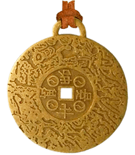

Решение проблемы - амулет денег и удачи
Итак, вам нужно получить оберег на деньги и удачу. Самым подходящим оберегом будет амулет который можно носить постоянно на себе. Лучше всего изготовить его в домашних условиях. Амулеты которые созданы вами лично — наиболее мощные по силе действия.
Талисман должен иметь форму круга, так как это символ финансовой стабильности. Материал должен быть металл — он символизирует прочность.
Money Amulet — как раз изготовлен для таких случаев. Его основа — китайские монеты XIX века из пожертвований для монастырей. Во-первых, их энергетика очищены благими помыслами дарителей, а во-вторых, молитвы монахов и долгое хранение монет в святых намоленных местах — гарантия огромной положительной энергии.
Ритуал активации оберега
После приобретения амулета и изготовления оберега, положите его на самое солнечное место в доме. Имеется в виду солнечное не за последнюю неделю, а вообще — за время вашего проживания в доме. Например, подоконник на кухне, окна которой выходят на солнечную сторону.
На следующее утро без посторонних свидетелей, с двух сторон от амулета завяжите на шнурке узелки. При завязывании первого узелка, вспомните о приятных, ярких событиях связанных с удачей. При завязывании второго — о хороших событиях связанных с деньгами. После чего наденьте амулет на шею, закройте глаза, изо всех сил концентрируясь на положительном настрое около минуты.
На этом все. Далее оберег начнет свою защиту от негативного развития события в вашей жизни.
Небольшой подарок. Пройдя по ссылке от нас, вы можетеприобрести Money Amulet со скидкой
Купить Money amulet